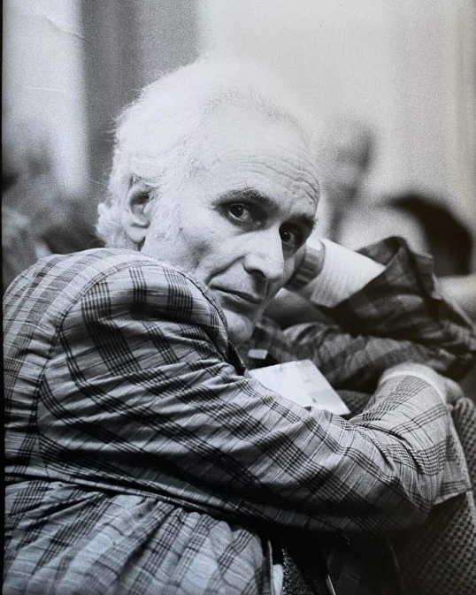

Introduzione
Sebbene nessuno dei seguenti modelli abbia dimostrato di avere più potenza del modello della macchina di Turing a nastro singolo, infinito, unidirezionale e multi-simbolo, i loro autori li hanno definiti e utilizzati per indagare domande e risolvere problemi più facilmente di quanto avrebbero potuto se fossero rimasti con il modello della macchina di Turing.
Macchine di Turing a nastro
La a-macchina di Turing
La a-macchina di Turing (come la chiamava lui) era infinita con l'estremità sinistra e l'estremità destra. Era consentito un numero finito di simboli del nastro. Questa macchina era divisa in due nastri che si muovevano sempre insieme. Le istruzioni apparivano in una forma tabellare chiamata "5-tuple" e non venivano eseguite in sequenza
Macchine a nastro singolo con simboli limitati e/o istruzioni limitate
I seguenti modelli sono macchine di Turing a nastro singolo ma limitate con simboli di nastro limitati { segno, spazio vuoto } e/o istruzioni sequenziali, simili a quelle di un computer, e/o azioni della macchina completamente atomizzate.
Modello di calcolo "Formulazione 1" di Post
Emil Post ha ridotto i simboli consentiti all'insieme binario equivalente di segni sul nastro. Ha cambiato la nozione di "nastro" da unidirezionale infinito a destra a un insieme infinito di stanze ciascuna con un foglio di carta in entrambe le direzioni. Ha cambiato le 5 tuple di Turing in 4 tuple: istruzioni di movimento separate dalle istruzioni di stampa/cancellazione. il modello di Post non richiedeva l'esecuzione sequenziale delle istruzioni. Questo modello, estremamente semplice, può emulare qualsiasi macchina di Turing, e può essere considerata una formulazione di un computer programmabile molto primitivo e del linguaggio di programmazione associato, con le “scatole” che agiscono come una memoria illimitata di stringhe di bit e l'insieme di istruzioni che costituiscono un programma.
Macchina di Wang
Hao Wang ha ridotto la "formulazione 1" di Post a macchine che utilizzano ancora un nastro binario infinito a due vie, ma le cui istruzioni sono più semplici e sono per impostazione predefinita eseguite in sequenza. Il suo scopo principale era quello di offrire una macchina che fosse “più economica nelle operazioni di base". I suoi risultati furono le formulazioni di programmi di una varietà di tali macchine, come la macchina Wang W a 5 istruzioni e la macchina Wang B a 4 istruzioni (estremamente ridotta). Furono in seguito introdotte varianti delle macchine discusse da Wang: Minsky ha sviluppato l'idea di Wang con la sua versione del modello "contromacchina" (multi-nastro), che consentiva il movimento delle testine separate ma nessuna stampa. In questo caso i nastri avrebbero ciascuna estremità contrassegnata con un singolo "segno" per indicare la fine. È stato in grado di ridurlo a un singolo nastro, ma a scapito dell'introduzione del movimento quadrato multi-nastro equivalente alla moltiplicazione e alla divisione.
Il linguaggio macchina teorico di Böhm
 In linea con il progetto di Wang di cercare una teoria equivalente a Turing, economica e volendo evitare salti incondizionati, un linguaggio teorico è il linguaggio a 4 istruzioni P" introdotto da Böhm nel 1964, il linguaggio di "programmazione strutturata", meno imperativo da dimostrare Turing-completo.
Macchine di Turing multinastro
Nell'analisi pratica vengono spesso utilizzati vari tipi di macchine di Turing multinastro. Le macchine a nastro multiplo sono simili alle macchine a nastro singolo, ma esiste un numero k costante di nastri indipendenti.
Il modello della macchina ad accesso casuale (RAM)
Melzak ha riconosciuto un paio di gravi difetti nel suo modello di registro/contromacchina: Senza una forma di indirizzamento indiretto non sarebbe in grado di dimostrare "facilmente" che il modello è equivalente a Turing, Il programma e i registri fossero in "spazi" diversi, quindi l'automodifica dei programmi non sarebbe facile. Quando Melzak aggiunse l'indirizzamento indiretto al suo modello, creò un modello di macchina ad accesso casuale. A differenza del modello RASP, il modello RAM non consente alle azioni della macchina di modificare le sue istruzioni. A volte il modello funziona solo da registro a registro senza accumulatore, ma la maggior parte dei modelli sembra includere un accumulatore.
Il modello di macchina RASP (Random Access Stored Program).
Il RASP è una RAM in cui le istruzioni sono memorizzate insieme ai relativi dati nello stesso "spazio", ovvero una sequenza di registri. Il RASP ha registri pari e dispari alternati: il pari, contiene il "codice operativo" (istruzione), e il dispari, contiene il suo "operando" (parametro). L'indirizzamento indiretto si ottiene semplicemente modificando l'operando di un'istruzione. I modelli RASP consentono l'indirizzamento sia indiretto che diretto; alcuni consentono anche istruzioni "immediate". Le istruzioni possono appartenere ad un insieme molto ristretto.
NTM
Una macchina di Turing neurale (NTM) è un modello di rete neurale ricorrente di una macchina di Turing. L'approccio è stato pubblicato da Alex Graves nel 2014. Le NTM combinano le capacità di corrispondenza dei modelli delle reti neurali con la potenza algoritmica dei computer programmabili. Una NTM ha un controller di rete neurale accoppiato a risorse di memoria esterne, con cui interagisce attraverso meccanismi attenzionali. Le interazioni della memoria sono differenziabili end-to-end, rendendo possibile l'ottimizzazione utilizzando la discesa del gradiente. Un NTM con un controller di rete di memoria a lungo termine (LSTM) può dedurre semplici algoritmi come la copia, l'ordinamento e il richiamo associativo solo dagli esempi. Gli autori dell'articolo originale di NTM non hanno pubblicato il loro codice sorgente. La prima implementazione stabile open source è stata pubblicata nel 2018 alla 27a conferenza internazionale sulle reti neurali artificiali, ricevendo il premio come miglior articolo. Esistono altre implementazioni open source di NTM ma a partire dal 2018 non sono sufficientemente stabili per l'uso in produzione. Gli sviluppatori segnalano che i gradienti della loro implementazione a volte diventano NaN durante l'addestramento per ragioni sconosciute e causano il fallimento dell'addestramento; segnalano una convergenza lenta; o non segnalano la velocità di apprendimento della loro attuazione. I computer neurali differenziabili sono una conseguenza delle macchine neurali di Turing, con meccanismi di attenzione che controllano dove è attiva la memoria e migliorano le prestazioni
Altre macchine di Turing e metodi equivalenti
- Macchina di Turing multidimensionale: ad esempio, un modello di Schönhage utilizza i quattro comandi di movimento della testa {Nord, Sud, Est, Ovest}
- Macchina di Turing a nastro singolo e multi-testina: in una prova di indecidibilità del "problema del tag", Minsky, Shepherdson e Sturgis descrissero macchine con un singolo nastro che poteva leggere lungo il nastro con una testina e scrivere ulteriormente lungo il nastro con un altro
- L'algoritmo di Markov è un altro modello computazionale straordinariamente semplice, basato sulla riscrittura di stringhe, equivalente alle macchine di Turing
- Calcolo lambda
- Automa delle code